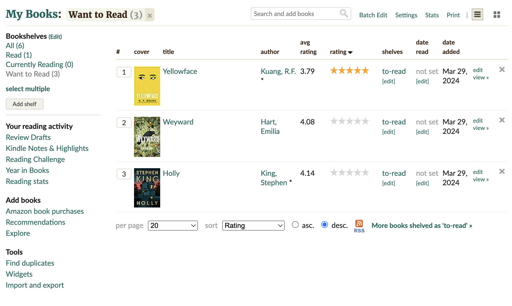

Car Shopping List Project
Overview
I developed a car shopping list where users can filter, sort, and save their favorite cars. It integrates shopping cart features inspired by well-known platforms such as Rotten Tomatoes, Goodreads, and Yelp. My goal was to create a user-friendly interface that simplifies the car shopping experience, making it easier for users to find their dream car.
Process and Inspiration
The project drew inspiration from the following features on popular platforms, adapting them to my context of car shopping:
- Rotten Tomatoes Reset Filters: This feature allows users to reset their selection to default settings after exploring various filters, such as sorting by 1-star-rated Action Movies.
- Goodreads Batch Edit Filters: Helps in managing large sets of items, like deleting multiple books at once which has been adapted to manage car selections effectively. 
- Yelp’s Filter by Category: Allows users to categorize searches like filtering restaurants, adapted to categorize cars by type, price, and more.
Key Features and Comparison
The table below provides a comparison of features adapted from Rotten Tomatoes, Goodreads, and Yelp:
| Feature | Rotten Tomatoes | Goodreads | Yelp |
|---|---|---|---|
| Sort by Rating | Yes | Yes | No |
| Filter by Category | Yes | No | Yes |
| Different Views | No | Yes | No |
| Smart Recommendations | Yes | Yes | No |
| Reset Filters | Yes | No | No |
My Role in the Project
This was a solo project where I researched existing aggregator interfaces, chose relevant features that worked well for my car website, iterated different designs, and then coded a fully functioning React app.
The Final App
I implemented a multi-filter interface with options to filter by car type, color, and price, alongside a reset filter and a visually informative card view. I decided on these three filter types after interviewing 10 car buyers and prioritized what matters most when shopping for cars. The next steps would be to add a sort by price feature and a smart recommendation system.
Link to the live site: View Car Shopping List